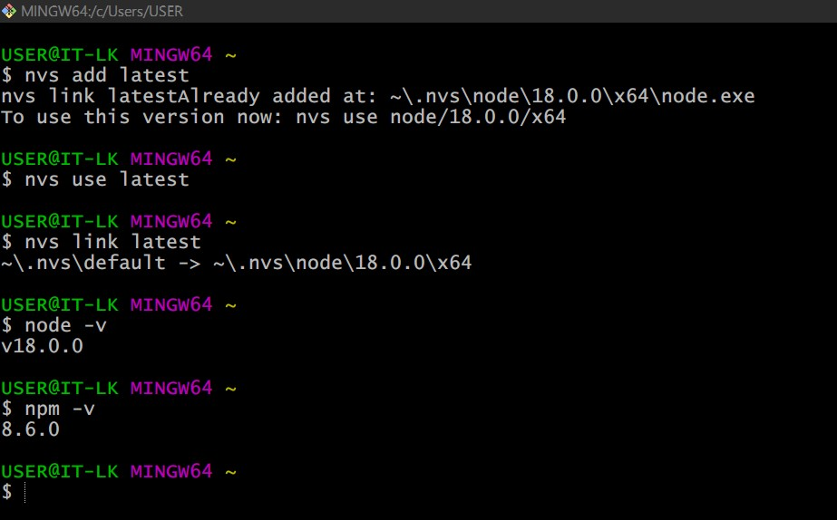

使用 Hexo 搭配 GitHub Pages 架設靜態網站
Contents
更新紀錄
- 2022.04.28: 此篇記錄第一次使用 Hexo 搭配 GitHub Pages 來架設 blog。
- 2022.12.19: 調整順序 (將 VSCode Snippet 片段放在前面)，因為後來實際是使用 Hugo 架設，之後將會新增 Hugo 安裝章節。
- 2022.12.20: 新增
Install Hugo on Linux章節。
Install Hugo on Linux
Hugo 主程式有兩種版本: standard 和 extended，差別在於 extended 可以 Encode WebP images (兩種版本都可以 decode) + Transpile Sass to CSS using the embedded LibSass transpiler。 官方建議安裝 extended 版本!
pre-Require
我使用的 WSL2 是 Ubuntu 22.04，以下範例 OS 會以它為準。
|
|
檢查 whereis go 和 go version 是否有抓到，如果沒有的話必須在 PATH 增加路徑 export PATH=$PATH:/usr/local/go/bin (WSL 使用 non-root user，應該都需要在 ~/.bashrc 新增 PATH)
使用 Prebuilt binaries
這個 binary 可以運作在不同 OS，下載 latest release、解壓縮後即可使用。
不過 release 內有 .deb 安裝包，我想優先使用!
|
|
|
|
VS Code Snippets
[官方說明] Snippets in Visual Studio Code
在 shell 的世界我們希望 [tab] [tab] 自動補齊，關鍵字是 auto completion，在 VS Code 的世界則稱作 snippet (n.) 片段。
以往我在使用 Markdown 打筆記時並沒有養成在開頭加上 front matter 的習慣，因為沒有自動補齊，要手動打的東西就會特多，自然懶惰~
|
|
▲ 這部影片解釋如何使用 snippet generator 產生 snippet 所需的設定檔。
▲ 左邊輸入想要的內容，右邊就能產生 Snippet 設定檔
▲ 按下 Ctrl + Shift + P 輸入 snippet 選擇 Preference: Configure User Snippetes
▲ 可以選擇 Global snippet (全域作用範圍) 或者僅限目前開啟的 Workspace，這邊的 'Markdown' 是我目前開啟的工作資料夾，不是 file type 喔~
▲ 接著輸入 snippet 設定檔檔名
▲ 會在該目錄下產生一個 .vscode 的 folder 存放 snippet 設定檔
▲ 使用方式就是 按下 Ctrl + Shift + P 選擇 Insert Snippet
▲ 選擇剛剛建立的 title 就能夠使用囉!
常用 VS Code Snippet
這邊純粹個人習慣~
|
|
▲ 圖片搭配 Delta
|
|
▲ 也是我常用的功能，粗體可以色色 >///<
|
|
▲ Markdown frontmatter
使用 Git Bash (MINGW 64) 安裝 Hexo
Hexo Documentation
nvs Mac, Linux Install
以 administrator 打開 Git Bash
|
|
|
|

▲ 版本檢查。
使用 npm 安裝 hexo-cli
|
|
▲ hexo 版本檢查。
init Hexo
▲ 初始化 Hexo 目錄
_config.yml
Hexo Configuration Document，大部分的設定都能在這裡找到。
package.json
Application data. The EJS, Stylus and Markdown renderers are installed by default. If you want, you can uninstall them later. (
懶著翻)
scaffolds
scaffold (n.) 鷹架。
When you create a new post, Hexo bases the new file on the scaffold.
source
將網站的內容原始碼 (source code) 儲存在這裡，Hexo 會忽略開頭是 _ (underscore) 的檔案與資料夾 (file and folder) _posts 這個資料夾例外
可被渲染 (renderable) 的檔案 (例如: Markdown, HTML) 將會被處理後放到 public 這個資料夾中。
白話一點講，執行 hexo generation 指令時 Hexo 會從這邊抓取 .md 產生 .html 到 public 這個 folder 當中~
themes
很顯然的是主題~ Hexo 有很多主題可以做選擇!
安裝 ICARUS 主題
|
|

▲ 這時候發生 ERESOLVE unable to resolve dependency tree 的問題，猜測可能是 Hexo 版本與 ICARUS 主題使用到的 module 有相依性的衝突。
當時我就先加上 error 建議的 --legacy-peer-deps 來試圖繞路 (感覺就是拿舊的相依套件安裝?)，錯誤消失後接著 hexo gen 一下囉!
結果又出現 error，ICARUS 所需的相依套件沒有被安裝， error message 推薦執行這行來安裝
|
|
▲ 狀況排除後就繼續 hexo gen 囉~ 因為偵測不到 theme 的 config file 所以自動幫我們建立!
[錯誤排除] Error: EPERM: operation not permitted
如果遇到
|
|
錯誤的話可以使用 npm cache clean --force 解決
▲ 在試圖解決安裝 ICARUS 時缺少的 module 時發生的錯誤 (有時候下 hexo clean 也會發生，發生原因沒有深入追查)
Asset folder
在預設的情況下 .md 會被放在 /source/_post 底下，而圖片的部分則是 /source/images。這對我而言會造成幾個問題:
- 我的圖片太多，檔名可能衝突到
- 當筆記數量一多，要尋找某篇
.md使用的圖片就會很費工夫
Asset folder 功能開啟後即可將圖片放在個別的資料夾內，同時也能被 .md 引用到
▲ <title>.md 同名資料夾 <title> 內存放圖片。未來會將 <title> 改成英文達到 URL 上的美觀，中文標題的資料夾會放在最上層達成管理上的方便 (中文的不進 source/_post)
開啟方式: 編輯 _config.yml
|
|
category_map 使用方式
在 _config.yml 裡面有個 category_map 選項，預設是 null 的，官方 docs 對它的說明是 Category slugs 什麼是 “slug” 呢?

▲ slug 其實就是接在 domain name 後面 path 啦! https://blog.xxzk.me/slug1/slug2/a.md 圖片來源
我們的 Markdown 筆記現在都有在開頭都有加上 front matter，其中就有個欄位是 categories，Hexo 會抓取這些並產生出 https://<YOUR-DOMAIN>/categories/ 這個 page (頁面)~ 直接舉一個例子好了
|
|
▲ 在 https://<YOUR-DOMAIN>/categories/ 下就會呈現這樣
如果我們想把 URL 上的「行政院」變成英文，就需要使用到 category_map 這個功能了!
▲ 在 _config.yml 增加對應設定就完成囉!
▲ 實際效果
參考資料:
ICARUS config
這個章節將會參考官方文件 Icarus User Guide - Configuring the Theme 來「裝潢」我們的 blog，不重要/我沒使用到 的部分就不一一介紹囉!
logo
logo 的部分可以使用 文字 or 圖片
|
|
Navigation Bar 導航列
也就是最上面那排，menu 的部分可以自行增加 格式: <link_name>: <link_url>。
links 則是右上角那排，icon 的部分可以使用 fontawesome，只不過語法要改一下 fa-brands => fab
|
|
Footer 網頁註腳
顯示的地方在最底部右下角，預設是放授權種類。關於 CC 授權可以參考 tw.creativecommons.net
|
|
Code Highlight
程式碼區塊高亮，樣式可以從 highlight.js/src/styles 挑選，demo 這邊請
Read Time 預估閱讀時間
預設是開的，本來想關 :)
|
|
Comment Plugin 評論插件
已關，有需要設定的話請參考這篇 Icarus User Guide - Comment Plugins
Sidebar
控制文章左右兩側的 Widgets 是否隨著文章移動。
Widget
Icarus User Guide - Widgets
簡單講幾個就好:
- 大頭貼可以直接 call GitHub 的來用
- Table of contents (ToC) 必須在 Markdown front matter 加上
toc: true這篇文章才會有 ToC - (承上) 要子標題常駐顯示
collapsed: false關閉 sub-headings 坍塌功能
▲ 右邊的就是 Table of Contents (ToC)，對我來說很好用! 可以快速跳轉
圖庫資源
Author 老柯
LastMod 2022-12-20 (daae40b)